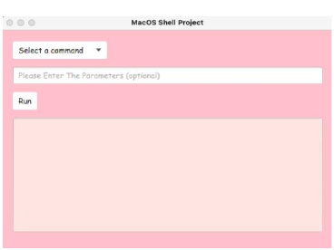
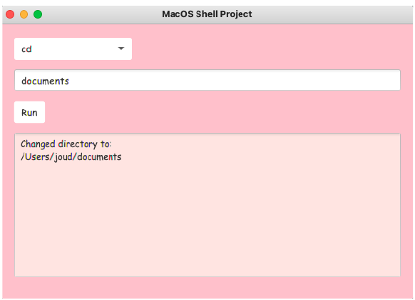
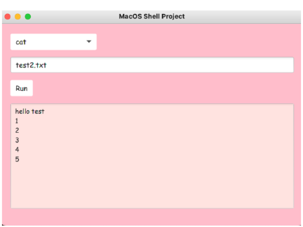
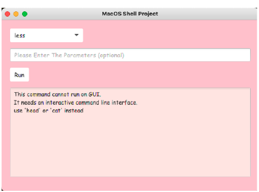
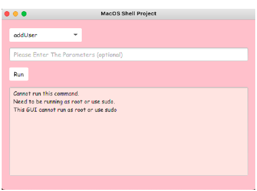

Unix Command Runner
A JavaFX desktop app that lets a user run common shell commands on macOS without typing in a terminal. Pick a command from a drop-down menu, type any parameters, press Run, and the output appears in a text area. It was meant to make the power of the command line easier for less-experienced users.
How it works
- Interface: a JavaFX window with a drop-down of about 30 commands (
ls,mkdir,cp,mv,grep,chmod,zipand more), a parameter field, a Run button and a read-only output area. Two event handlers drive it: one for choosing a command and one for pressing Run. - Running commands: each command is started with
ProcessBuilderin azshsubprocess. The program reads both the normal output and the error output, and checks the exit code to decide what to show. - Working directory: every command runs as a separate process, so
cdcannot work normally. The app handles it itself by keeping track of the current and previous directories (includingcd ~andcd -) and starting each process in the current one. - Friendly errors: commands that need root access, need an interactive terminal, or are missing a required parameter show a clear explanation instead of freezing or crashing.
Screenshots
The app on launch.

Changing directory. The app tracks the current folder itself.

Running a command with a parameter: cat on a text file.

less needs an interactive terminal, so the app explains why and suggests head or
cat instead.

Commands that need root access, like addUser, are blocked with an explanation.
